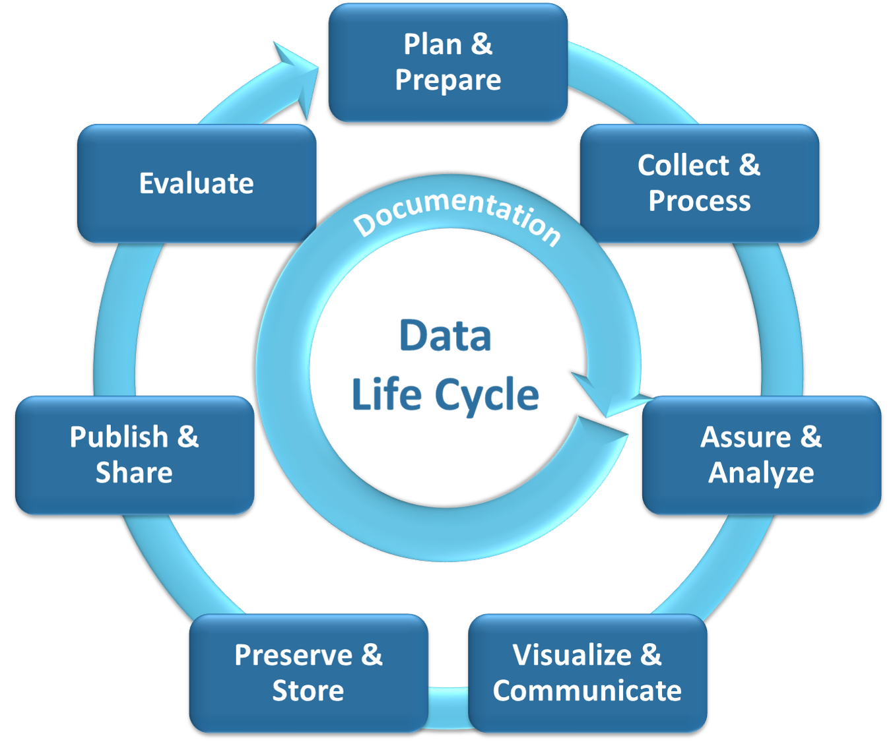

Welcome to the Water Boards Equity Data Handbook!
This Equity Data Handbook is designed to be an open, living, and continuously iterating resource. New content may be added and existing content may be revised at any time without prior notice to evolve this critical resource according to the needs of the Water Boards. See Maintenance & Updates and Contributing & Feedback for more details.
This Equity Data Handbook is an online resource written by the State Water Resources Control Board (State Water Board) and the nine Regional Water Quality Control Boards (Regional Water Boards), collectively known as the California Water Boards (Water Boards).
Content in this Handbook includes best practices, guidance, and resources to help Water Boards staff incorporate racial equity concepts, principles, and practices into their data-related work. The Handbook does not provide a single method or process recommendation for doing data-intensive work with an equity lens because a “one size fits all” approach is not effective or equitable. Rather, the Handbook provides curated resources and recommendations to consider so that each practitioner and/or project team can use the methods that best suit the specific objectives, needs, and audience of the data, products and/or services in development.
Specifically, each core chapter of this Handbook represents a phase of the data life cycle and dives into curated best practices, guidance, and resources to support Water Boards staff with implementing that phase of the data life cycle with an equity lens. A depiction of the Data Life Cycle is provided below for reference, and a detailed table of contents is available at the bottom of this page with general descriptions of the type of information and resources can be found in each chapter.

We must have meaningful engagement and partnership with our diverse communities during each phase of the Data Life Cycle, especially those that have been historically underserved namely Black, Indigenous, and other People of Color (BIPOC). If we focus on uplifting those most highly impacted we will inevitably improve the data products and services we develop and, most importantly, the experiences and outcomes for all communities.
Detailed Table of Contents
| Handbook Chapter | Content Description |
|---|---|
| Welcome | Introduction to the Handbook and orientation to its contents |
| Getting Started | Guidance for practitioners who are unsure of where to begin with operationalizing equity into their work |
| Background | Overview of Handbook purpose, audience, recommended use, and development process and context |
| Plan & Prepare | Guidance on conducting an equity assessment (Plan) + developing a data management plan (Prepare) |
| Collect & Process | Guidance related to collecting appropriate data for equity-centered analyses (Collect) and preparing to be used for analyses or product development steps using an equity lens (Process) |
| Assure & Analyze | Guidance related to conducting data quality checks (Assure) and the data analysis processes (Analyze) |
| Visualize & Communicate | Guidance related to developing data visualizations (Visualize) and communicating or reporting about the project results or products (Communicate) |
| Preserve & Store | Guidance on data and product retention, archiving, and storage |
| Publish & Share | Guidance on sharing project data and products with partners and the public |
| Evaluate | Guidance on project evaluation techniques (e.g., Root Cause Analysis, Results-Based Accountability) |
| Documentation | Guidance on how and what to document throughout the life of a project |
| Use Cases | Examples of how others at the Water Boards have operationalized equity into their data-intensive work |
| Appendix | Supplementary material referenced in other sections of the Handbook |
| Resources | Additional resources not referenced in the body of the Handbook (e.g., Webinars & Trainings, Data/Equity Toolkits & Hubs) |